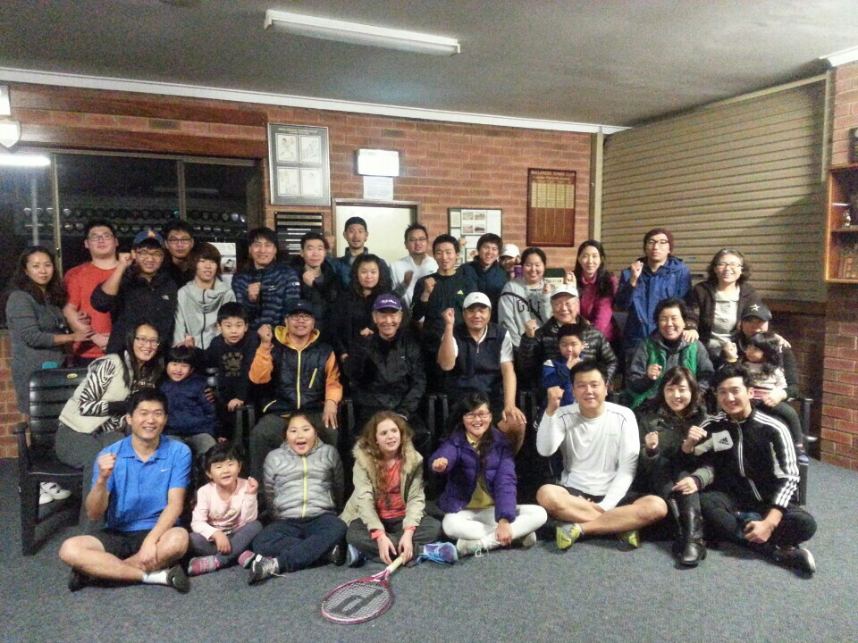

History
Starting around 2005, due to the resource boom initiated by Western Australia, the Korean population in WA began to increase rapidly. Since 2013, exchange students and some church members have joined the Bull Creek Tennis Club as members. Starting at the end of that year, they began a separate gathering for Korean compatriots on Saturday nights. Kim Se-young (current coach), Kim Dae-yeon (inaugural captain), Kim Ki-nam (inaugural treasurer), Lee Seung-mo (inaugural advisor), Jeon Chang-yeol (inaugural president), Lee Jae-jin, and others participated.
